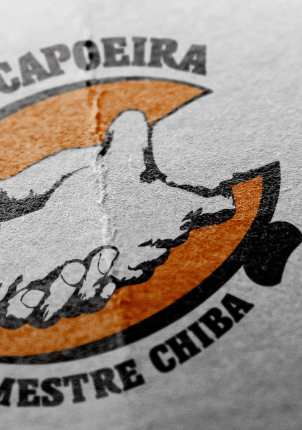

Janga (Tururu) Município de Paulista/PE.
(00)00000-0000
O Centro Educacional Cultural Desportivo Ilê Capoeira, foi fundado no dia
13 de janeiro de 2013, na cidade do Paulista, Pernambuco, Brasil.

(texto de exemplo) Busca se opor as diversas situações de violências, entre as quais as domésticas e sexuais. Contribuímos para a inclusão social de crianças e adolescentes.
(texto de exemplo) Busca se opor as diversas situações de violências, entre as quais as domésticas e sexuais. Contribuímos para a inclusão social de crianças e adolescentes.
Ver atividades(texto de exemplo) Busca se opor as diversas situações de violências, entre as quais as domésticas e sexuais. Contribuímos para a inclusão social de crianças e adolescentes.
Janga (Tururu) Município de Paulista/PE.
@ilecapoeira
ilecapoeira@gmail.com
(00)00000-0000
@ilecapoeira
(texto de exemplo) Busca se opor as diversas situações de violências, entre as quais as domésticas e sexuais. Contribuímos para a inclusão social de crianças e adolescentes, por meio da oferta de oficinas culturais (música, arte e dança), Oficina Recreativa com ênfase na cultura de paz, de lazer, informática, artes, elevação escolar, entre outras atividades.